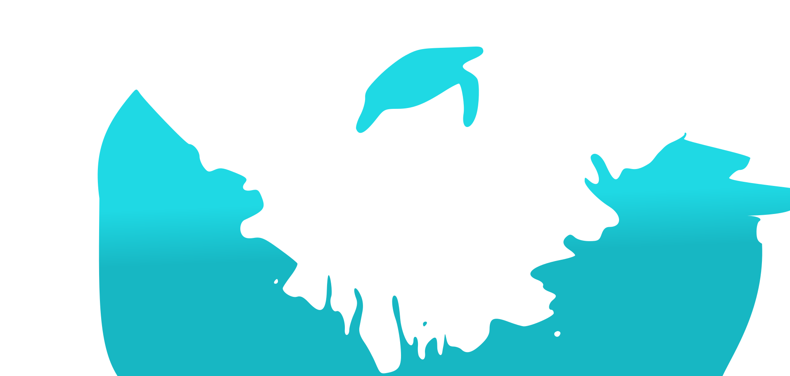
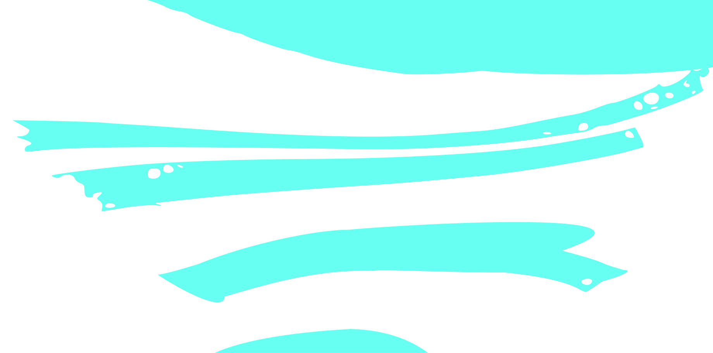
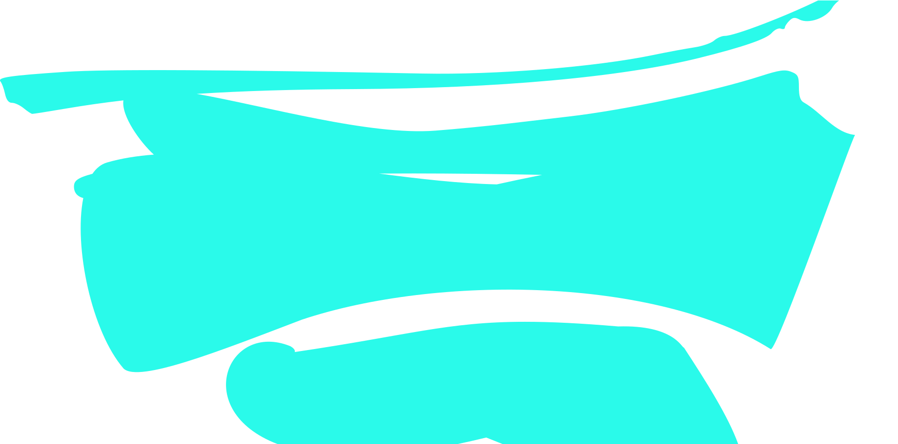

{% include side-bar.html %}

<!-- Parallax background image -->
<!-- <div class="background">
    
</div> -->
<div class="background">
    <ul id="scene" style="margin: -5px; padding: 0;">
        <li class="layer" data-depth="0.00" style="z-index: 10; "></li>
        <li class="layer" data-depth="0.00" style="z-index: 9"></li>
        <li class="layer" data-depth="0.10" style="z-index: 8"></li>
        <li class="layer" data-depth="0.20" style="z-index: 7"></li>
        <li class="layer" data-depth="0.30" style="z-index: 6"></li>
        <li class="layer" data-depth="0.40"style="z-index: 5"></li>
    </ul>
</div>
<div class="root">
    {% include navigation.html %}
    {% include intro.html %}
    {% include about-me.html %}
    {% include experience.html %}
    {% include footer.html %}
</div>

